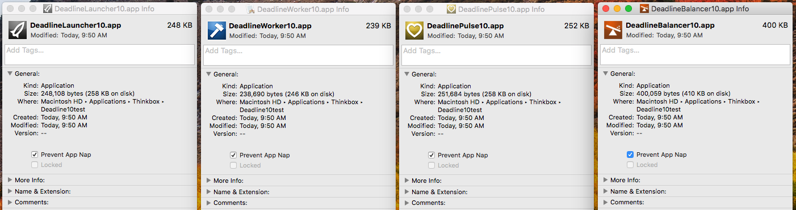

Render Farm Considerations¶
This is a list of things that should be taken into consideration before installing Deadline.
Rendering Software and Licensing¶
It is recommended that the rendering applications you plan to use for rendering (ie: 3ds Max, Maya, etc) be installed on all of your render nodes. It is preferable that you install an application to the same location on each machine, as this makes configuring the Deadline plugins easier.
Note that some applications are able to be installed and run from a network location. This can make setup and configuration easier. Refer to rendering application’s documentation to see if this is supported.
In addition, it is recommended that all licensing setup before attempting to render on your network. Deadline does not handle the licensing of 3rd party rendering applications, refer to the application’s documentation or contact its support team if you run into issues with licensing.
Store Assets On The Network¶
It is recommended that all assets (ie: scenes, footage, textures, etc) used by your render jobs be placed on a network share (preferably a server), which can be accessed via a shared path or a mapped network drive. This is important for two reasons:
It ensures that all the Workers in your render farm have access to your asset files.
It ensures that the Workers use the same version of the asset files that are used by your job.
Note that you can optionally submit the scene file with the job. This results in the scene file being sent to the Repository or an alternate location, and then copied locally to the Worker that renders it. If the scene file contains relative asset paths, it is recommended to not submit the scene file with the job. As these relative paths will likely be broken when the Worker renders the scene from its local location.
When rendering in a mixed operating system (OS) environment, you can configure Deadline to swap paths based on the operating system it is running on. The way this works is often specific to the rendering application that you are using, please refer to Cross-Platform Rendering Considerations section for the plugin that you are using for more information. You can access plugin specific documentation in the Plugins documentation.
Save Output Files To The Network¶
All output should be saved to a network share as well (preferably a server). This is important as it ensures that all the Workers in your render farm have access to the output path.
When rendering in a mixed OS environment, you can configure Deadline to swap output paths based on the operating system it is running on. The way this works is often specific to the rendering application that you are using, so please refer to Cross-Platform Rendering Considerations section for the plugin that you are using for more information. You can access plugin specific documentation in the Plugins documentation.
Path Mapping¶
It is recommended to avoid using only drives when path mapping as it may cause problems when rendering. This is because on certain file types, such as vrscene and ifd files, Deadline performs path mapping on binary data. When a path is too short (for example: “Y:\”), there is the potential to accidentally match on a random set of binary data and corrupt it with a new path.
Remote Administration¶
Deadline has a Remote Administration feature that can be enabled in the Client Setup section of the Repository Options, which can be accessed from the Monitor by selecting Tools -> Configure Repository Options while in Power User Mode. This feature allows you to control all the render nodes remotely from a single machine, including starting and stopping the Worker application, and running arbitrary command line applications on each machine. However, this feature can be a potential security risk if you are not behind a firewall. If this is the case, we recommend that you keep this feature disabled.
WINS/DNS/AD/LDAP¶
It is assumed a studio will optionally already have a WINS/DNS server system setup, to ensure the resolving of hostnames to IP addresses works seamlessly with Deadline and optionally be part of a domain via Active Directory or LDAP to handle security/user/file permissions.
Running as a Service/Daemon¶
For those considering running some or all of your render nodes as a service/daemon, here is list of factors to consider:
UI
The UIs for almost all of our Deadline applications are hidden. This might be restrictive if you wish to ad-hoc remote into a machine to view the Worker/Pulse activity. Alternatively, you can always view the individual application logs and/or stream those logs ‘live’ to your Deadline Monitor.
Environment
Ensure any environment variables are available for the user account running the service/daemon.
Note the available settings if you intend to use the Render Jobs As Job’s User feature, especially for Linux/macOS Workers where the service/daemon must have sudo privileges for this mode to work. See the User Settings options in the Repository Configuration for additional options for su, sudo and HOME.
GPU
Note the lack of OpenGL on Windows unless ‘interact with desktop’ is enabled in the service properties.
Note
NVidia drivers (Quadro/GeForce) as of r361 now support CUDA 7.5+ renderers within a service context. Make sure you update your graphics card drivers to overcome the limitation as described below.
GPU renderers ONLY work in non-service mode as Windows expects a GPU card to be a graphics device only. Windows does NOT allow any background service to access the graphic card. Therefore you cannot run the client as a service if you want to use GPU rendering for the Redshift renderer in Maya or Softimage. An exception is the Nvidia TCC (Tesla Compute Cluster) capable cards such as Tesla, some Quadro and GeForce Titan cards. As the TCC driver is a computation and not a graphics driver, it can be accessed by a Windows service. However, in the case of Quadro/GeForce graphics cards, once the TCC driver is being used, then these cards can no longer be used as a displaying graphics card for the machine. Therefore, you will require at least 2 graphics cards in this configuration.
Deadline has GPU Affinity settings that can be set for Workers, in the same way that CPU affinity can be set. These GPU affinity settings can be used by Deadline’s application plugins to set the GPUs to use for the render if the job’s renderer supports it. The GPU affinity settings are used by many plugins such as the Maya and Softimage plugins when a GPU based renderer such as RedShift is being used. For example, if you have two Workers running on a machine with 4 GPUs, you could set their affinity so that one Worker uses GPUs 0 and 1, and the other Worker uses GPUs 2 and 3. When these Workers render RedShift jobs, they will pass the GPUs they want to use to RedShift so that each render only uses 2 GPUs. Please consult the specific application plugin documentation for more information.
Idle Detection
On Windows, Idle Detection will NOT work if the Launcher is running as a service. This is because the service runs in an environment that is separate from the Desktop, and has no knowledge of any mouse or keyboard activity.
On Linux, the Launcher uses X11 to determine if there has been any mouse or keyboard activity. If X11 is not available, Idle Detection will NOT work. One such situation is when the launcher is running as a daemon.
Due to the service/daemon restrictions, you may wish to consider running your ‘headless’ render nodes as a service/daemon but your workstations in ‘normal’ (non-service) mode so that user workstations will have Idle Detection functionality.
Mapped Drives
Note, drives can be mapped when running as a service on Windows. Beware that if a user is logged in and has mapped drives set up for them, the Deadline Worker service won’t see them because they run in a different environment. However, if the drives are mapped in the service’s environment (which is what the Worker is doing), then they will work fine. In the Mapped Drives section of the Repository Configuration we provide a checkbox at the bottom of the page to control this configuration.
Rebooting Linux Nodes¶
Linux requires elevated permissions for power related tasks such as rebooting or powering off the machine. The Deadline Launcher is responsible for issuing these commands on behalf of incoming requests (either via Remote Administration or Power Management), while the Worker is responsible for issuing these commands when it finishes its current task.
This can be accomplished by using sudo to allow only the Launcher’s user to reboot the machine. Available in Deadline 7.1 and higher, ensure sudo is installed and to add the following line to the /etc/sudoers file (please use visudo to edit as it will ensure proper syntax):
user_name ALL=(ALL) NOPASSWD: /sbin/poweroff, /sbin/reboot, /sbin/shutdown
Here, “user_name” should be replaced with the name of the user which the Launcher is running under. If the Worker was not started by the Launcher, the users (duplicate line for each) or user groups who may run the Worker. In the case of a user group, replace “user_name” with the name of the group prefixed with “@”. For example, “@deadline”. In most farms, users will not directly interact with the Worker, so Worker access to machine restart may not be required.
Note that Deadline will attempt to run this command through sudo if it is installed on the system.
Automatic Updates¶
- Note ..
Using this feature requires the Deadline install to be world-writeable, and should therefore be used with caution
Deadline has an Automatic Updates feature that can be enabled in the Client Setup section of the Repository Options, which can be accessed from the Monitor by selecting Tools -> Configure Repository Options while in Power User Mode. Enabling this feature makes minor Deadline upgrades easy, with little to no downtime. Refer to the Upgrading Documentation for more information.
Setup An SMTP Server for Emails¶
Deadline can use email to notify users when their jobs have succeeded or failed. Email can also be used to notify system administrators of all sorts of events, like when Workers stall or when jobs fail. It is recommended that an SMTP server be setup so that you can make use of these features.
You can configure the email notification settings in the Repository Options, which can be accessed from the Monitor by selecting Tools -> Configure Repository Options while in Power User Mode.
Auto Login on Windows Server Render Nodes¶
If you’re not running the Worker as a service, it can be set to start automatically when the render mode it is on starts up, but this requires that the render node login automatically. On Windows Server, this can be done by modifying the registry on each render node.
These are the steps to setup your render node registry to login:
Ensure the Deadline Worker is configured to run on startup. By default, the Workers are set to start automatically when the machine logs in. This setting, as well as others, can be modified from the Launcher on each machine.
Follow Microsoft’s instructions for enabling automatic login on Windows.
The next time you restart the machine, it should login automatically as the specified user.
App Nap on macOS Render Nodes and Workstations¶
App Nap is a collection of new features that are availble macOS (10.9+) and later that helps conserve CPU energy use by “slowing down” or stopping applications that cannot be seen, for example if they are behind another window or the screen has been put to sleep. However, this can have an adverse affect on Deadline and the applications it is rendering with. Because of this, we recommend disabling App Nap and screen power saving modes (if applicable) on render nodes across the entire operating system by enabling the “Prevent App Nap” checkbox via right-click “Get Info” for each application on each machine or by following these steps in terminal:
Open a terminal (the Terminal can be found in /Applications/Utilities).
Run the following command (sudo rights required) and you must restart the machine
defaults write NSGlobalDomain NSAppSleepDisabled -bool YES
If you wish to re-enable App Nap, follow the steps above, but run the following command for (2) instead:
defaults delete NSGlobalDomain NSAppSleepDisabled
You can check the status of the setting (if it already exists on a machine) by the following command, where “1” means App Nap is disabled and “0” means it is enabled:
defaults read NSGlobalDomain NSAppSleepDisabled
If workstations are being used as render nodes, it is recommended to disable App Nap on them as well. However, if workstations are simply being used to submit and monitor render jobs, then this shouldn’t be necessary.
On Macs which have built-in or connected external displays, once a screen saver has begun or the display has been put to sleep by power management, Deadline as well as other rendering applications will be throttled down to conserve energy, regardless of the per-app App Nap setting.
Finally, the machine that is running Pulse should also have App Nap disabled, or at the very least, disabled for the Pulse applications. To disable App Nap for the Pulse application only, right-click (or Command-click) on the DeadlinePulse application in Finder, and select Get Info. Then in the General section, check the “Prevent App Nap” box. If Pulse is currently running, you will have to restart it for the changes to take effect.
Disable WER on Windows¶
When applications crash on Windows, the system holds the application open in memory and displays a series of helpful boxes asking if you want to submit the error report to Microsoft. While that’s super handy for all sorts of reasons, if there’s no one there to click the dialog (headless render node), Deadline will assume the application is still running and wait indefinitely by default.
The registry fix below will stop that from popping up on render nodes that don’t have baby sitters. Meaning when the application crashes, it actually exits like we know it should. This change is system-wide, but can be configured per-user if you like by changing the registry hive used (HKEY_CURRENT_USER versus HKEY_LOCAL_MACHINE). Ensure you restart the machine after changing the registry setting and it is always recommended to take a backup before editing a machine’s registry. Copy the code below into a file: “DisableCrashReporting.reg” and double-click this file as a user with administrator privileges. Alternatively, you can manually add/edit the registry entry via “regedit.exe” or inject the registry silently via the command-line “regedit.exe /s DisableCrashReporting.reg”.
Windows Registry Editor Version 5.00
[HKEY_LOCAL_MACHINE\SOFTWARE\Microsoft\Windows\Windows Error Reporting]
"Disabled"=dword:00000001
For more information about the possible settings, see here: MSDN article WER Settings.
It’s also possible to just default to sending them if you like, or to store the crash dumps in a safe place if you’re a developer.
Firewall, Anti-Virus & Security Considerations¶
Here is a checklist of items which should be considered by those responsible for deploying Deadline repository and client software.
If you haven’t done so already, please review the AWS Thinkbox Deadline Shared Responsibility Model.
Ensure you consider additional configuration requirements for any software/hardware firewall clients, network switches, anti-virus software clients and Operating System specific security controls such as Windows UAC or SELinux (Security-Enhanced), which may attempt to block Deadline communication.
Windows UAC
Ensure Windows UAC is correctly configured to allow Deadline communication and the correct execution of the Deadline applications.
User Accounts for Render Nodes
The Deadline Worker is designed to run processes and code on remote machines; this is part of the rendering process. Because of this functionality, it is possible for Deadline to run processes or code that could be harmful to the machine. For example, a user could submit a command line job to Deadline that formats the root drive. While plugins that allow for arbitrary process/code execution like CommandLine, CommandScript, and Python are disabled by default, it is still recommended that you use best practices when choosing the user account that the Deadline Worker runs as.
By default, the Deadline Worker starts processes as the user that it was launched by, so it is recommended that the user account that starts the Deadline Worker only have privileges that are necessary to complete the rendering of its tasks. For example, the rendering application probably doesn’t need write access to the root drive. Restricting privileges will reduce the blast radius of what malicious processes and code can do on that machine.
When restricting a user account, keep in mind that some things are still required. For example:
User accounts must have network access so that they can communicate with your file server and the Deadline Database.
User accounts must have Deadline Repository access.
Note
If render nodes are connected to a remote Repository via a Connection Server, the same rules above apply to the Deadline Remote Connection Server.
Note
It is recommended to not run these applications under Administrator or root user accounts, unless there is good reason to do so. These user accounts do not have restricted privileges.
Port Configuration
When setting up Deadline it is important that MongoDB, the Deadline Repository, and Deadline applications are able to communicate on your local or extended network with each other via their TCP or UDP ports. The table below lists out the default ports used by each application or feature. It is recommended that you only allowlist ports for applications and features that you are actively using.
Note
Deadline 10 applications use the base port number of 17000. The base port number is used as the default for the Launcher, and then the rest are offset by one as per the table below.
Protocol |
Port Number |
Application / Service |
Comment |
|---|---|---|---|
TCP |
|
Launcher |
Default TCP port - Launcher listening port |
UDP |
|
Auto-Config |
Default UDP port - Pulse listens for broadcasts on the UDP port |
TCP |
|
Auto-Config |
Default TCP port - Pulse sends Auto-Config data over TCP |
TCP |
|
Pulse |
Default TCP port - Configure Repository Options - Pulse Settings |
TCP |
|
Worker |
Default TCP port - Worker |
TCP |
|
License Forwarder |
Default TCP port - License Forwarder |
TCP |
|
License Forwarder Messaging |
Default TCP port - License Forwarder |
TCP |
|
AWS Asset Server |
Default TCP port - AWS Asset Server |
TCP |
|
AWS Portal Link |
Default TCP ports for remote commands and status communications - AWS Portal Link |
TCP |
|
RCS (http) |
Default TCP port - Remote Connection Server. This is the default port the Remote Connection Server(s) will listen to without TLS enabled. |
TCP |
|
RCS (https) |
Default TCP port - Remote Connection Server. This is the default port the Remote Connection Server(s) will listen to with TLS enabled. |
TCP |
|
Web Service (http) |
Default TCP port - Web Service |
TCP |
|
UBL |
Outbound TCP port for Usage-Based Licensing. |
TCP |
|
MongoDB |
Default TCP port for MongoDB installed by Deadline DB/Repo installer |
TCP |
|
MongoDB Web API |
Access the http web site (optional) for database information |
UDP |
|
WoL (Wake-On-Lan) |
Default UDP port - Configure Repository Options - Wake On Lan Settings |
UDP |
|
WoL (Wake-On-Lan) |
Default UDP port - Configure Repository Options - Wake On Lan Settings |
UDP |
|
NTP |
|
TCP |
|
SMTP |
For mail server to receive e-mail notifications from Workers and Pulse |
TCP |
|
SMTP (submission) |
|
TCP |
|
SMTP TLS |
For sending notifications using TLS |
UDP |
|
SNMP (GET requests) |
Default UDP port - Power Mgmt - Thermal Sensors (UDP |
External Web Service Access
When making the Deadline Web Service available externally, ensure Require Authentication is enabled and that Allow Empty Passwords is turned off. See Web Service documentation for more information.
AWS EC2 Considerations¶
EC2 Instance Metadata
When using Deadline applications in AWS (including AWS Portal and Spot Event Plugin), it is required that Instance metadata is enabled for all EC2 instances. Instance metadata is used to detect if Deadline is running in AWS, and instance reporting in the Resource Tracker, AWS Portal, and Spot Event Plugin. Note that the IMDSv2 metadata service is enabled by default. More information on configuring instance metadata can be found in the AWS documentation.
Note
As T-type instances are equipped with Burstable CPU and governed by CPU Credits, the instances can run out of credits causing CPU throttling issues on the machine. We strongly recommend to not use the T-type instances for Deadline components.

{kind=link}